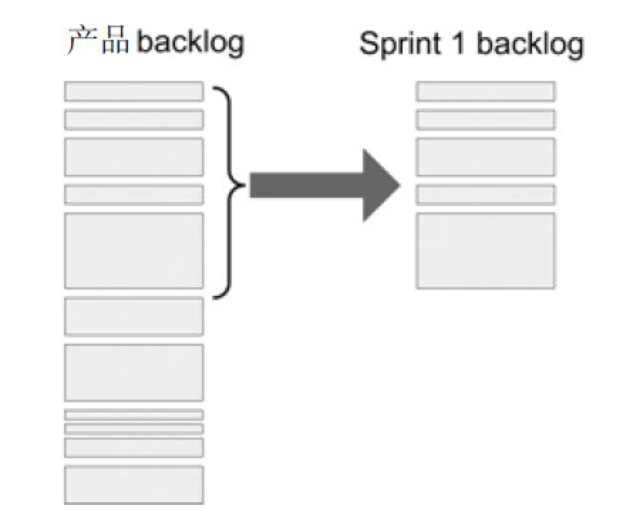
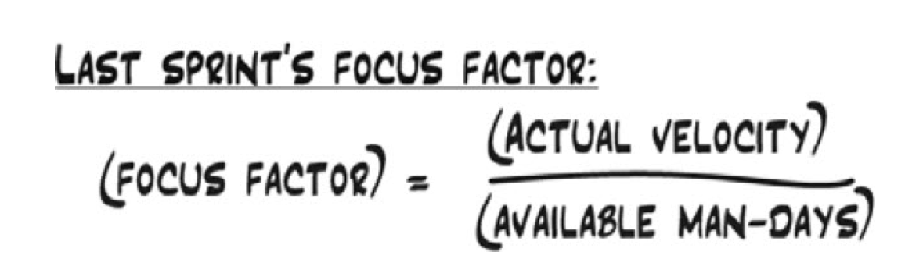
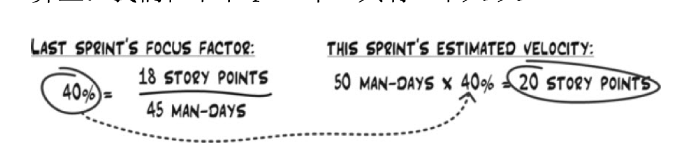

(28 Aug 2020)
Today I started reading Scrum and XP from the Trenches, written by Henrik Kniberg. I knew about XP from the book Refactoring, and thought that this book will be a nice complementary reading for CompSci701, as Scrum/XP has so much to do with trade-offs and scope decisions.
Enhancing comprehensibility/alterability/testability takes time, but pays off richly as a key part of the internal quality - quality that product owners/users cannot see.
I am reading the English and Chinese versions as a pair - Chinese version for the speed and English version to map key terms. The Chinese version is translated by 李剑.
Story/Backlog
I tried working with User Stories when working on TripTime, and found that a very helpful way of keeping track of our project progress, making decisions about priorities and trade-offs, and organising end-to-end tests.
Henrik gives his recommendation on the six key entries that should be included in a story:
- ID
- Name (descriptive, brief, differentiable)
- Importance (each story should have different value!)
- Initial estimate: story point/man*day estimation (should have relative correctness)
- How to demo (could be used as pseudo code for Acceptance Testing - I did similar thing on TripTime but called it acceptance criteria)
- Notes (referring to supportive information, explanations, examples)
Who can decide what
People other than the product owner can add stories to backlog, but:
- Only Product Owner can decide the importance.
- Only Developing Team can add time estimation.
Don’t compromise on internal quality
Therefore, as a developer, I should be aware that I need to budget the time for refactoring and enhancing the maintainability of my code. The product owner might want to negotiate on this - they might want to get something that “works” (external quality) faster, without giving the time for internal quality. We shall not compromise on internal quality: ask them to make the scope smaller instead.
Sprint Plan Meeting
Why product owner MUST be there
Every story has three variables, and they have strong dependency on each other:
- Scope (decided by product owner)
- Importance (decided by product owner)
- Estimation (decided by developers)
Direct collaboration on dynamically adapt this triangle is the foundation of Scrum.
Why never compromise on Internal Quality
A third variable: Quality
- External Quality
- what users can feel
- Part of Scope: negotiable with product owner. A slower system with simpler UI could be released first, followed by a cleaner one.
- Internal Quality
- what users cannot see
- long-term impact on maintainability and lifelong cost of ownership
- Non-negotiable: always ensure internal quality!
How to negotiate when the product owner wants a shorter estimated time but doesn’t want to “pay” by external quality: Redirect the topic back to scope:
- Maybe we could simplify error handling in the current story, and put “Advanced error handling” as a separate story to be implemented later?
- Maybe we could reduce the priority of other stories, so that we can focus on delivering the current story sooner?
Once the product owner realise that the internal quality is non-negotiable, they are usually able to go and address other variables.
Timeboxing
Timeboxing is equally helpful for sprint and meeting.
If the sprint meeting has reached the pre-defined timebox and no valid plan is made, still end the meeting and learn from it. Next time there will be less rejection on a longer timebox for planning meeting, after the team suffers from the poorly planned sprint.
This methodology will be helpful to my practices other than code. I tend to push families/friends/teammates to reach the goal, no matter how long it takes, and sometimes we just give up because it has been so long since we embarked for the goal.
We should box the time instead of the scope. It takes practice to make a good estimation of what can be done within the box, but this is the better approach for more efficient team work.
Sprint Length: Compromises and dynamic adaptations
- Shorter = More frequent delivery = More frequent Feedback = Less time on the wrong direction = Faster learning and improvement = agile movement, Often preferred by product owner.
- Longer = More time to prepare and solve problems = Less tedious Meetings and Presentations = More “flow” working state, Often preferred by developing team.
No need to spend time analysing. Get started with an acceptable length, and commit to a length after the team knows what suit us.
Scrum is the spirit to do, to experiment and to swiftly adapt. The spirit applies both to developing and to other decision making in my life.
Sprint Goal: You have to have one
- Express it with business terms instead of technology terms.
- Make more money
- Impress CEO
- Make the system good enough to be released to real users as a beta version
- Implement the three most important storeis
- “Why this sprint? Why don’t we just go for a holiday?”
- You come back to the sprint goal during the sprint, when you are confused about what you are doing.
- Sprint goals of all teams could be listed on a significant position of the companies’ wiki page, so that everyone in the company can come and have a look what the company is doing 👊
Decide what stories to include
- Each rectangle is a story, ranged by importance
- Size is the estimated time by story points
- Height of brace means estimated velocity (story points that could be finished in next sprint)
Decide the velocity
These three methods could be used in combination to decide the team’s velocity for the current sprint:
- Intuitive reactions: good for small team
- Yesterday’s weather: Estimate how many stories can be included based on the velocity history of the team.
- Man-Day available * Focus Factor estimation
Focus Factor * Man-Day Available estimation
 Now we know we should include no more than 20 points for the current sprint, with the 50 man-days available.
“Almost done” is not included in actual velocity
The requirement of Scrum: Get things done to a deliverable state
If the thing is “almost done”, its value is 0 (or maybe negative)
Story Index Card and Work Breakdown Structure
- Physical Story Index Cards that encourage engagement of the whole team.
- Sticky note under the Index Cards for task breakdown. These details do not need to be in backlog.
This will require the Scrum Master to manually update the excel from changes of the physical cards, but is worth it considering the enhancement of meeting plan efficiency.
This relates back to a video, Work Breakdown Structure demonstration that I watched at project management course. Now the man’s talk make more sense.
Defining “Done”
There has to be a consensus on how to define “DONE” between the product owner and the developer team.
Possible definitions:
- Ready to be realeased any time
- On the testing server, ready for acceptance test
- The testing team says OK
An entry in each story stating how to define “DONE” for it would be helpful, as each story may vary.
Planning Poker
We used this at the CompSci718/719 Project debriefing!
Every member should have a certain understanding of the story. The Planning Poker approach ensures that everyone is actively thinking.
Story v.s. Tasks
- Stories are deliverable.
- Product owners care about stories.
Break stories into smaller stories at the sprint planning meeting, in collaboration with product owners.
Break storeis into tasks with the developer team, which helps deciding the story points.
Tasks in TDD
Almost every stories’ first task is “write a test that fails”.
The last task is “refactoring” (Remove any duplicate code; improve comprehensibility)